| 日付 | 2009年6月14日（日） |
|---|---|
| 山域 | 御坂･天子山塊 |
| メンバー | グループ（男2女2） |
| 山行形態 | 日帰り |
| アクセス | 電車 |
| ルート (Map) | 笹子駅→本社ヶ丸→三ツ峠山→三つ峠駅 |
富士の展望が非常に良い本社ヶ丸から三ツ峠山への縦走をやってみることにする。
御坂山塊を北から南に貫く、魅力ある登山道だ。
7:36 笹子駅到着。標高605m。
今日は歩く距離が長いので、集合時間は早めだ。
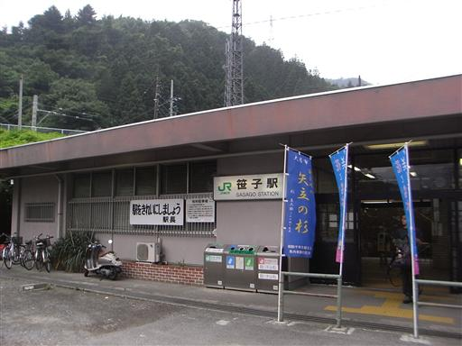
今日の空模様は非常に悪い。
展望は全く望めそうにないが、雨さえ降らなければよいだろう。
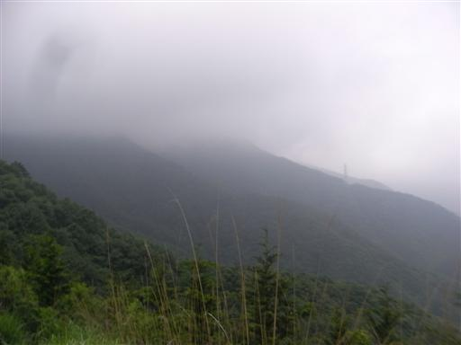
登山道開始地点から道を間違えてしまったため、30分ほど時間をロスしてしまう。
相当に急な斜面を登りきって、登山道に復帰する。
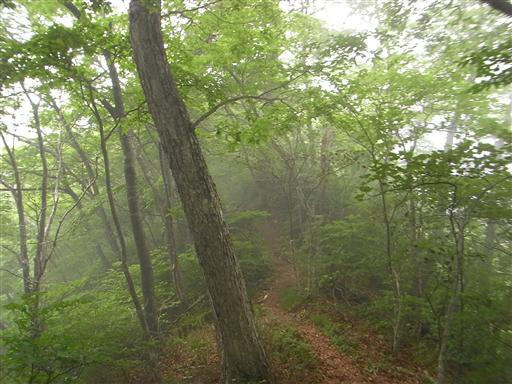
11:22 本社ヶ丸山頂到着。標高1630m。
狭い山頂は大勢のハイカーで埋め尽くされている。
結局それは一つの大パーティで、彼らが去った後は山頂が静かになる。
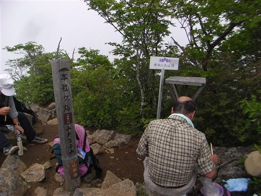
本社ヶ丸から清八山めざして歩いていく。
この辺りは岩がちな地形で、晴れていれば展望の良さそうなところだ。
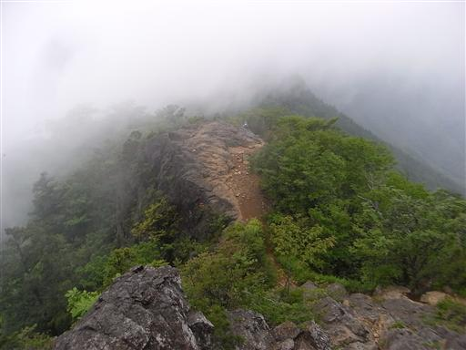
本社ヶ丸のすぐ隣にある清八山に到着する。
この山からも富士の展望がよいはずだ。
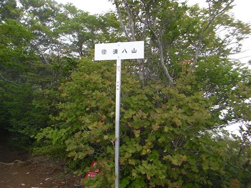
清八山から下山道と分かれて三ツ峠山をめざす。
しばらく登ると御巣鷹山の巨大鉄塔の影が見えてきた。
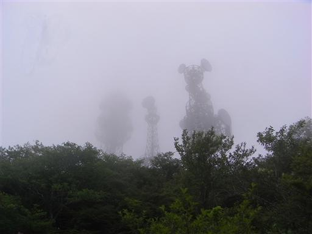
御巣鷹山から三ツ峠山最高峰の開運山までは鬱蒼とした森がなくなり
山の表情が少し変わる。
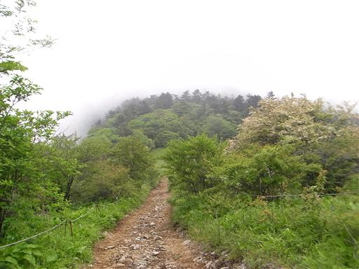
道端にぽつんとアヤメの花が咲いている。
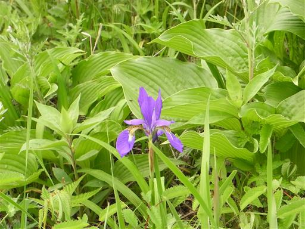
しばらく歩くと、開運山の鉄塔も見えてきた。
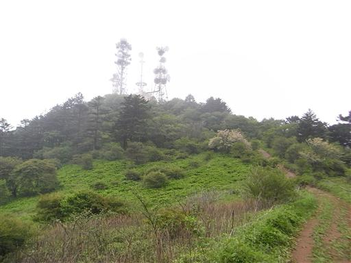
14:14 三ツ峠山山頂到着。標高1785m。
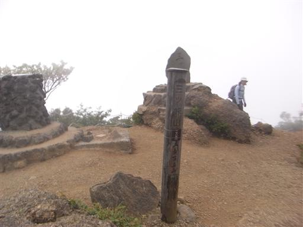
一瞬雲がはれて、すぐ下の小屋がちらりと見える。
真正面にあるはずの富士山は影も形も見えない。
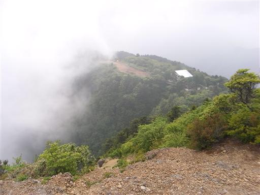
山頂を辞して、小屋のところまで降りてくる。
小屋に人気はないが、おとなしい犬が一匹番をしている。
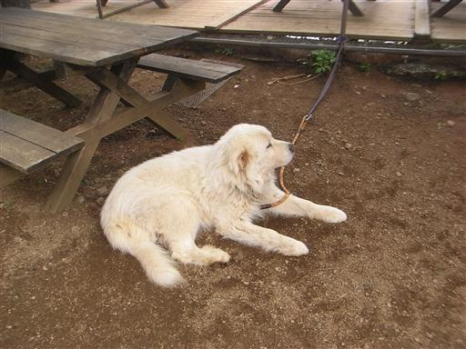
サラサドウダン。落ち着いた感じの花で、好きな花の一つだ。
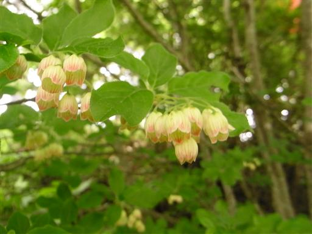
山頂直下の屏風岩は相変わらず大迫力だ。
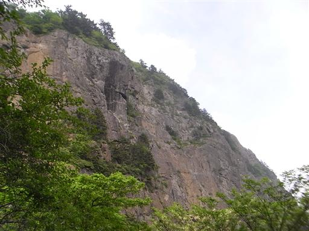
前回ここに来たときは指が凍るほど寒かったが今は6月。
多くのクライマーがこの岩壁に挑戦している。
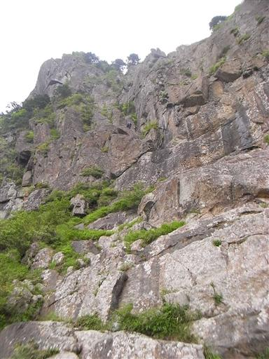
八十八大師に到着。下山道は以前来たとき登りに使った道を選ぶ。
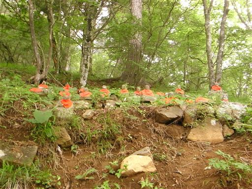
もう少しまともな文言はなかったのだろうか…
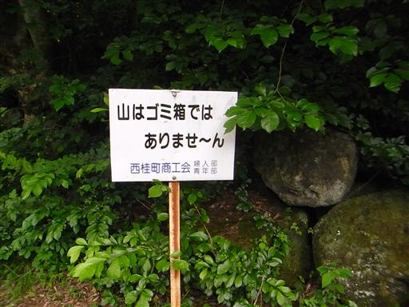
下山。ここからしばらくは車道歩きが続く。
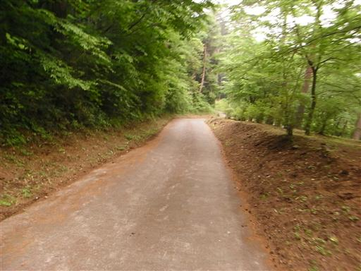
岩盤を流れる川。晴れていればその向こう側に三ツ峠山が見えるのだが…
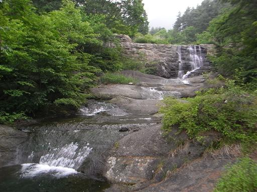
17:01 三ツ峠グリーンセンター到着。標高640m。
三つ峠駅まで行く途中にある便利な施設。
ここで汗を流して、夕食をとってから帰ることにする。
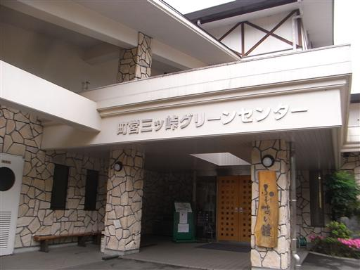